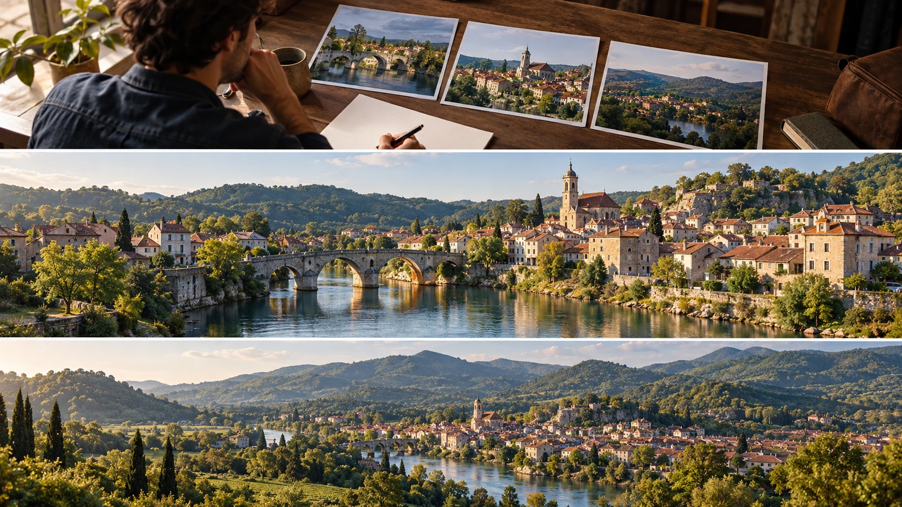

G33 · 초급 · 일반 드론
Monschau: 제공된 대본을 관광 항공 영상으로 옮기기
대본의 문장을 필요한 공간 정보로 바꾸고 장면의 역할을 검토하는 법을 배운다.
그림에서 확인할 세 가지대본의 정보 요구를 컷의 역할로 옮긴다.
1책상 위의 장면 후보
맨 위 인물 앞에는 다리와 마을, 넓은 풍경을 담은 사진이 놓여 있다. 서로 다른 범위의 이미지가 각각 어떤 정보를 전달하는지 나누어 본다.
2강과 다리의 관계
가운데는 강을 건너는 다리와 주변 집들이 가까이 읽힌다. 마을 안에서 이동과 생활이 이루어지는 관계를 설명하는 화면인지 살핀다.
3숲 안에 놓인 마을
맨 아래는 마을이 주변 숲과 지형 속에 작게 놓인다. 가운데에서 본 개별 장소를 더 넓은 지역 안에 위치시키는 역할을 비교한다.
촬영 설계
촬영을 이렇게 설계한다
확인된 제작 범위를 정한다
확인 가능한 내용은 관광 목적의 항공 영상과 제공된 대본에 따른 촬영이라는 소개다. 실제 대본의 문장이나 감독의 쇼트 선택을 임의로 만들어 제작 사실처럼 설명하지 않는다.
문장에 필요한 정보를 고른다
교육 적용에서는 별도의 연습 대본을 만들고 마을의 위치, 강과 다리, 주변 숲 중 어떤 정보가 필요한지 표시한다. 한 문장에 여러 공간을 무조건 나열하지 않고 우선순위를 정한다.
컷의 기능으로 순서를 검토한다
교육 적용에서는 가까운 장소 소개와 넓은 지역 설명을 나누어 편집 후보를 배치한다. 멋있는 장면이라도 대본의 이해를 늦춘다면 다른 위치로 옮기거나 제외하는 대안을 비교한다.
Joel Mulder의 소개는 Monschau와 주변 풍경을 제공된 대본에 따라 촬영한 작업이다.
원본 영상Monschau: 제공된 대본을 관광 항공 영상으로 옮기기
1. 장면의 설명 범위
원본에서 가까운 장소와 넓은 지역을 보여주는 컷을 구별한다. 각각 어떤 정보를 주는지 영상에서 확인한다.
2. 장소 사이의 연결
강·다리·마을·숲이 어떤 순서로 소개되는지 살핀다. 공간의 관계를 이해할 수 있는 단서가 제공되는지 판단한다.
3. 영상과 대본의 구분
자막이나 내레이션이 있다면 화면이 어떤 말을 구체화하는지 본다. 공개되지 않은 대본 내용을 거꾸로 단정하지 않는다.
재생이 제한되면 원본 영상 새 창을 이용하세요.
공식 소개 · 한국어 요약
대본에 맞춘 관광 촬영의 공개 범위
의뢰와 촬영
Joel Mulder의 포트폴리오는 Monschau와 주변 풍경을 담은 관광 항공 영상을 소개하며 제공된 대본에 맞춰 촬영한 작업이라고 밝힌다.
미공개 자료
실제 대본과 촬영 콘티, 반복 촬영의 이유는 공개 소개에서 확인되지 않는다.
학습안 범위
따라서 문장을 컷의 기능으로 바꾸는 절차는 제작자의 실제 방식이 아닌 교육용 제안이다.
Kling 프롬프트단문 인과 체인 · 16:9
내가 직접 만들어 본다
가까운 다리에서 시작해 마을과 숲으로 넓어지며 정보가 순서대로 전달되는 인과를 지시한다.
- S01작은 마을 한가운데로 강이 흐르고 다리가 놓여 있다.
- S02영상은 하나의 연속 쇼트다.
- S03화면에 드론 기체는 나오지 않는다.
- S04처음 10초 동안 카메라가 다리 가까이에서 시작한다.
- S05다리가 먼저 보여서 마을의 중심이 먼저 한눈에 보인다.
- S06강이 다리 아래로 흘러 마을의 집들을 가른다.
- S07다음 10초 동안 카메라가 천천히 위로 올라간다.
- S08카메라가 올라가자 다리 주변의 집들이 한눈에 들어온다.
- S09집들이 보이자 사람이 사는 마을의 규모가 보인다.
- S10마지막 10초 동안 카메라가 더 높이 올라가 숲을 드러낸다.
- S11숲이 드러나기 때문에 마을은 지형 속에 작게 놓인다.
- S12다리는 끝까지 화면 아래 중앙에 남는다.
- S13가까운 장소에서 넓은 지역으로 순서대로 설명된다.
[네거티브]
- 다리가 없거나 강이 마을과 떨어져 있는 것 금지
- 중간에 컷이 생기며 장면이 바뀌는 것 금지
- 화면에 드론 기체가 나타나는 것 금지
- 처음부터 높은 곳에서 마을 전체를 보여 주는 것 금지
- 다리가 집들에 가려 사라지는 것 금지
- 강이 다리와 상관없이 엉뚱한 곳으로 흐르는 것 금지
- 카메라가 갑자기 솟구치거나 옆으로 빠지는 것 금지
- 집들이 사라지고 다리만 남는 것 금지
- 마을이 비어 있는 폐허처럼 보이는 것 금지
- 숲이 나타나지 않고 같은 마을만 계속 보이는 것 금지
- 마을이 숲보다 크게 화면을 차지하는 것 금지
- 다리가 올라가는 도중 화면 밖으로 사라지는 것 금지
- 넓은 지역이 먼저 나오고 가까운 장소가 뒤따르는 것 금지
결과에서 볼 것
- 다리가 가장 먼저 읽혔는가
- 높이가 올라갈수록 마을과 숲이 순서대로 드러났는가
- 가까운 장소와 넓은 지역의 순서가 분명했는가